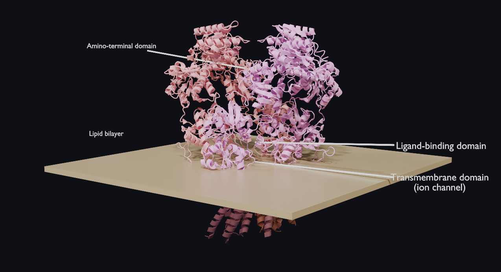

3D Animation & Visualization
A 3D-animated visualization of the neuromuscular junction, the chemical synapse through which a motor neuron signals a skeletal muscle fiber to contract.
The animation depicts the sequence of synaptic transmission: an action potential propagates down the myelinated motor axon to the axon terminal, where it triggers the release of acetylcholine (ACh) from synaptic vesicles into the synaptic cleft. ACh diffuses across the cleft to the motor end-plate, depolarizing the muscle membrane and generating a muscle action potential that propagates along the fiber, the same electrical event measured non-invasively by surface electromyography (EMG).
All structures, including the motor axon, axon terminal, synaptic vesicles, and muscle fiber, were modeled from scratch in Blender and shaded with procedural materials, including subsurface scattering for muscle tissue and a translucent terminal that reveals the vesicles within. The sequence was annotated, keyframe-animated (90 frames, 24 fps), and rendered in EEVEE.

A 3D render of the muscle-type nicotinic acetylcholine receptor (nAChR), the ligand-gated ion channel at the neuromuscular junction that converts the chemical signal of acetylcholine into an electrical response in muscle. The model was generated from the experimentally determined cryo-EM structure (Protein Data Bank: 2BG9) using Molecular Nodes in Blender, with each of the receptor's five subunits shown in a distinct color.
The receptor is embedded in a lipid bilayer: the extracellular ligand-binding domain projects above the membrane, the transmembrane domain forms the central ion channel, and the intracellular domain extends below. Rendered in Cycles.

A render of the NMDA receptor, an ionotropic glutamate receptor that mediates excitatory neurotransmission in the central nervous system. The model is built from the experimentally determined structure of the GluN1/GluN2B receptor (Protein Data Bank: 4PE5) and shows the heterotetramer's characteristic layered architecture: the amino-terminal domains (top), which allosterically regulate receptor activity; the ligand-binding domains (middle), which bind the co-agonists glutamate and glycine; and the transmembrane domain (bottom), which forms the ion channel and is shown embedded in a lipid bilayer.
As a glutamate-gated, calcium-permeable channel with a voltage-dependent magnesium block, the NMDA receptor functions as a molecular coincidence detector and is central to synaptic plasticity, underlying long-term potentiation, the principal cellular mechanism of learning and memory. Its dysfunction is implicated in a range of neurological and psychiatric conditions, including schizophrenia and excitotoxic injury.
The visualization was generated from the receptor's atomic coordinates using the Molecular Nodes framework in Blender, with each subunit distinguished by color and the structure shown in cartoon representation. It was rendered in Cycles, with a surrounding lipid bilayer indicating the membrane context of the transmembrane domain.
The motor unit, a single α-motor neuron and every muscle fiber it innervates, is the smallest functional unit of movement. This animation follows one twitch end to end: an action potential initiates at the cell body, propagates down the axon to the neuromuscular junctions, and drives all of the unit's fibers to depolarize and contract in synchrony.
The fibers are shown scattered among those of neighboring units rather than clustered, the anatomical reason their summed signal, the motor-unit action potential (MUAP), reaches the skin blurred, and the elementary event that high-density surface EMG must resolve to decode intended movement.
When a motor unit fires, its scattered fibers depolarize in synchrony, but the signal must spread through tissue before it reaches a grid of electrodes on the skin. This animation shows that journey: the fibers flash, and a beat later the surface amplitude map blooms into a single smooth hot-spot, computed as the distance-weighted sum each electrode receives.
The discrete sources have collapsed into one blurred blob, and recovering which units fired from that blur is the core inverse problem of high-density surface EMG, the problem a decoding armband exists to solve.